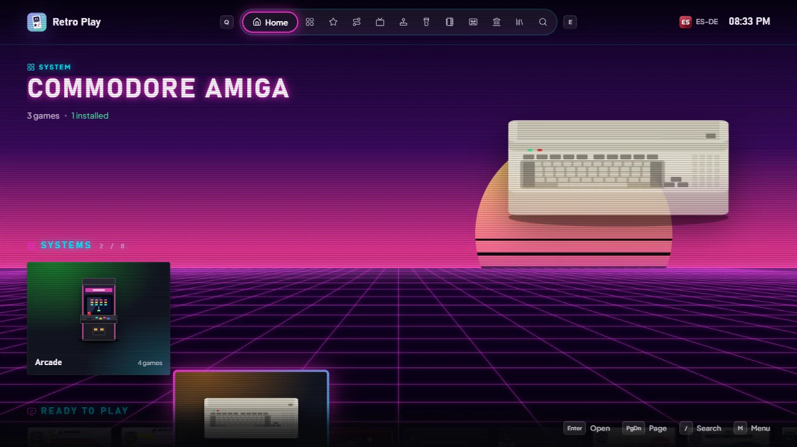
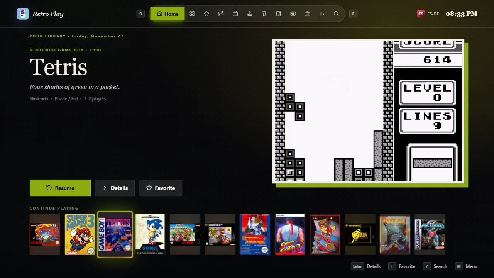
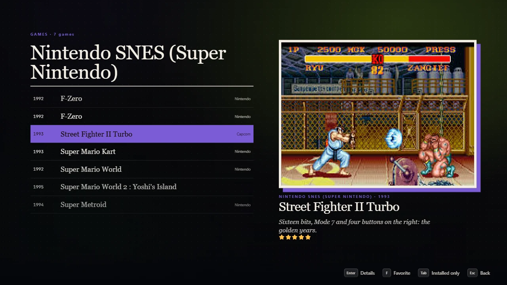

Make Desktop Mode look like nothing else
A theme changes everything you see and hear in Desktop Mode: colors, fonts, pictures, sounds, words, how the screens are laid out, even whole screens written in JavaScript. You start without code, and go as far as you like.

All topics
From the first color to screens of your own.
Getting started
What a theme is, and your first one

What a theme is
From a colour to a Desktop Mode that looks like nothing else.

Your first theme in 5 minutes
New theme, the editor, then a line of CSS.
The theme folder
Its files, their paths, packing it as a .zip.
Let an AI make it
Describe the theme; Claude Code or another assistant writes it.
theme.json
Colors, fonts, pictures, sounds, words, options
theme.json
Every key at a glance.
Colors, fonts, corners
The colors of every part, the fonts, how round.
Background and pictures
A background per system, a picture per console, the intro.
Sounds and music
Each sound a file, notes made on the spot, or none; music behind.
The app’s words
Say what Desktop Mode says, in your words.
Options for the user
Switches, choices, colors and sliders the user changes.
Scenes
Every screen made of the elements you place

Scenes: screens you compose
Every screen made of elements you place, bound to the game with the focus.
The elements
Texts, pictures, videos, lists, buttons: what a scene is made of.

Lists
Rows, columns, grids, wheels and coverflows, drawn as you want.
Values and conditions
{focus.name}, filters, and when an element shows.

Variants, systems, includes
Layouts to choose among, each system with its own colours and words.
CSS
Parts, states, numbers and recipes
Scripts
Effects and screens of your own, in JavaScript

Tools and help
Inspector, problems, examples